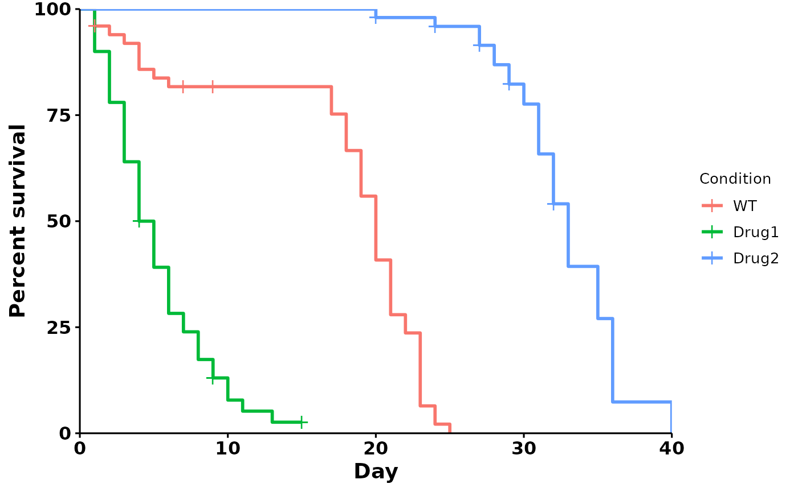
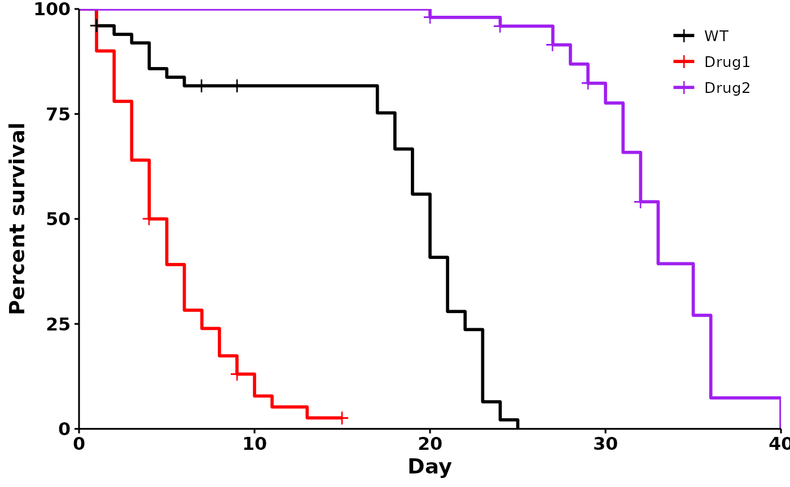

getting-started-with-r
getting-started-with-r.RmdGetting started with R
This vignette is for complete beginners to R. If you know
how to use R and are looking to customize your plots further, see
vignette("customizing-plots").
1. Download R and RStudio
Download the most recent versions of R and RStudio for the appropriate OS using the links below:
2. Create a new R Project
Create a new folder in a place where you can easily find it again.
Put your lifespan study csv file in here. In this tutorial, my file is
called sample_data.csv.
Your csv file should have 4 columns: condition, day, dead, censored. Here is an example:
| condition | day | dead | censored |
|---|---|---|---|
| WT | 10 | 2 | 0 |
| WT | 12 | 0 | 2 |
Open RStudio. Click on File -> New Project -> Existing folder. Navigate to the folder that contains your lifespan csv file, and click “Create”. RStudio should now open in a new window, and you should see your lifespan study csv file in the bottom right Files pane.
Create a new Quarto markdown file. Click on File -> New File -> Quarto Document.
3. A quick guide to RStudio:
The user interface
- insert image: console, main code, environment, files panel image -
Code chunk vs text
Quarto documents consist of two parts - code chunks vs text chunks.
Here is a code chunk:
1 + 1
#> [1] 2And here is some text:
1 + 1
What’s the difference?
Code chunks are evaluated - meaning that any calculations
will be run. For example, if you type =1+1 in Excel, Excel
automatically sums them up and returns the answer, 2. In contrast, if
you type =1+1 in Microsoft Word, it will remain as
text.
A simple analogy - code chunks are the Microsoft Excel of R, while text chunks are the Microsoft Word of R. To run code chunks, click on the tiny green triangle pointing to the right at the top right of the code chunk. Code chunks have a different colour, and are delineated by the ‘```{r}’ header. Everything within a code chunk is run and evaluated. The only exceptions are comments, which start with a #:
# This is a comment: Let's try adding in R
1 + 1
#> [1] 2# Not run - this will return an error.
This is not a comment: Let's try adding in R
1 + 1The tldr: code chunks are for code, while text chunks are for text. Describe what you are analyzing and describe your conditions that you are testing. This will help your reader, and also your future self when you revisit this analysis several years down the road.
For example, I will begin by describing my fictional dataset:
This dataset contains lifespan data from 50 _C.elegans_ worms.
Summary of conditions:
condition | description
WT | 50 N2 worms
Drug1 | N2 worms treated with fictional Drug X at 50 μM
Drug2 | N2 worms treated with fictional Drug Y at 50 μM
3. Start your analysis
First, we load libraries. Libraries are packages that contain functions that you need to run. Copy and paste these chunks of code into your Quarto Document.
Next, read in your csv file:
4. Run a default analysis:
p <- run_bulksurv(df)
#> $median_survival
#> Call: survfit(formula = Surv(day, status) ~ condition, data = df_isurv)
#>
#> n events median 0.95LCL 0.95UCL
#> condition=WT 50 47 20.0 19 21
#> condition=Drug1 50 46 4.5 4 6
#> condition=Drug2 50 42 33.0 32 35
#>
#> $logrank
#> Call:
#> survival::survdiff(formula = Surv(day, status) ~ condition, data = df_isurv)
#>
#> N Observed Expected (O-E)^2/E (O-E)^2/V
#> condition=WT 50 47 31.2 7.94 12.9
#> condition=Drug1 50 46 12.5 89.99 128.1
#> condition=Drug2 50 42 91.3 26.60 123.3
#>
#> Chisq= 186 on 2 degrees of freedom, p= <2e-16
#>
#> $pairwise
#>
#> Pairwise comparisons using Log-Rank test
#>
#> data: df_isurv and condition
#>
#> WT Drug1
#> Drug1 2.3e-14 -
#> Drug2 < 2e-16 < 2e-16
#>
#> P value adjustment method: BH
p
That’s it! Congrats on getting started with R. If you want to further
customize your plots, see vignette("customizing-plots")
A preview of the cool stuff you can do:
p <- run_bulksurv(df,
sample_order = c("WT", "Drug1", "Drug2"),
print_stats = FALSE,
add.median.surv = TRUE,
palette = c("black", "red", "purple"), # Custom colors
legend.title = "", # Remove legend title
legend.position = c(0.9, 0.9), # Position legend at top right
add.pval = TRUE # Add pvalue
)
p5. Converting to PRISM
If you’re converting this to PRISM, use this command
df_prism <- pivot_prism(df)
write.csv(df_prism, file = "df_prism.csv")You should see a df_prism.csv file appear in your
folder. Copy and paste this into GraphPad PRISM, and run a survival
analysis in PRISM.
Further reading
If you’re new to R, I highly recommend this great resource by the Harvard Chan Bioinformatics Core. It provides a great overview of the RStudio interface, as well as R Projects that help keep your analysis organized. https://hbctraining.github.io/Intro-to-R-flipped/lessons/01_introR-R-and-RStudio.html
sessionInfo()
#> R version 4.3.2 (2023-10-31)
#> Platform: x86_64-pc-linux-gnu (64-bit)
#> Running under: Ubuntu 22.04.3 LTS
#>
#> Matrix products: default
#> BLAS: /usr/lib/x86_64-linux-gnu/openblas-pthread/libblas.so.3
#> LAPACK: /usr/lib/x86_64-linux-gnu/openblas-pthread/libopenblasp-r0.3.20.so; LAPACK version 3.10.0
#>
#> locale:
#> [1] LC_CTYPE=C.UTF-8 LC_NUMERIC=C LC_TIME=C.UTF-8
#> [4] LC_COLLATE=C.UTF-8 LC_MONETARY=C.UTF-8 LC_MESSAGES=C.UTF-8
#> [7] LC_PAPER=C.UTF-8 LC_NAME=C LC_ADDRESS=C
#> [10] LC_TELEPHONE=C LC_MEASUREMENT=C.UTF-8 LC_IDENTIFICATION=C
#>
#> time zone: UTC
#> tzcode source: system (glibc)
#>
#> attached base packages:
#> [1] stats graphics grDevices utils datasets methods base
#>
#> other attached packages:
#> [1] ggbulksurv_0.2.1
#>
#> loaded via a namespace (and not attached):
#> [1] gtable_0.3.4 xfun_0.41 bslib_0.5.1 ggplot2_3.4.4
#> [5] rstatix_0.7.2 lattice_0.21-9 vctrs_0.6.4 tools_4.3.2
#> [9] generics_0.1.3 tibble_3.2.1 fansi_1.0.5 highr_0.10
#> [13] pkgconfig_2.0.3 Matrix_1.6-1.1 data.table_1.14.8 desc_1.4.2
#> [17] lifecycle_1.0.4 farver_2.1.1 compiler_4.3.2 stringr_1.5.1
#> [21] textshaping_0.3.7 munsell_0.5.0 janitor_2.2.0 carData_3.0-5
#> [25] snakecase_0.11.1 htmltools_0.5.7 sass_0.4.7 yaml_2.3.7
#> [29] pillar_1.9.0 pkgdown_2.0.7 car_3.1-2 ggpubr_0.6.0
#> [33] jquerylib_0.1.4 tidyr_1.3.0 cachem_1.0.8 survminer_0.4.9
#> [37] abind_1.4-5 km.ci_0.5-6 tidyselect_1.2.0 digest_0.6.33
#> [41] stringi_1.8.1 dplyr_1.1.4 purrr_1.0.2 labeling_0.4.3
#> [45] splines_4.3.2 rprojroot_2.0.4 fastmap_1.1.1 grid_4.3.2
#> [49] colorspace_2.1-0 cli_3.6.1 magrittr_2.0.3 survival_3.5-7
#> [53] utf8_1.2.4 broom_1.0.5 withr_2.5.2 scales_1.2.1
#> [57] backports_1.4.1 lubridate_1.9.3 timechange_0.2.0 rmarkdown_2.25
#> [61] gridExtra_2.3 ggsignif_0.6.4 zoo_1.8-12 ragg_1.2.6
#> [65] memoise_2.0.1 evaluate_0.23 knitr_1.45 KMsurv_0.1-5
#> [69] survMisc_0.5.6 rlang_1.1.2 Rcpp_1.0.11 xtable_1.8-4
#> [73] glue_1.6.2 jsonlite_1.8.7 R6_2.5.1 plyr_1.8.9
#> [77] systemfonts_1.0.5 fs_1.6.3